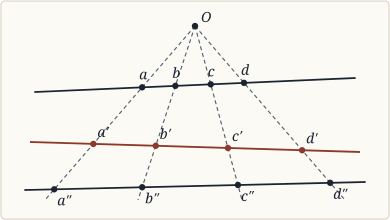
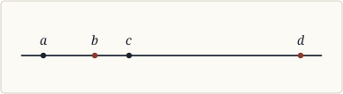
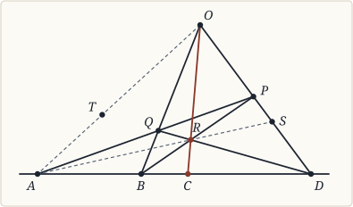

CHAPTER III — SECTION A¶
The Axioms of Projective Geometry (§§ 102–140, pp. 117–147)
§ 102. Projective Geometry does not deal with magnitude, and applies to all spaces alike¶
102. Projective Geometry proper, as we saw in Chapter I., does not employ the conception of magnitude, and does not, therefore, require those axioms which, in the systems of the second or metrical period, were required solely to render possible the application of magnitude to space. But we saw, also, that Cayley’s reduction of metrical to projective properties was purely technical and philosophically irrelevant. Now it is in metrical properties alone—apart from the exception to the axiom of the straight line, which itself, however, presupposes metrical properties [1]—that non-Euclidean and Euclidean spaces differ. The properties dealt with by projective Geometry, therefore, in so far as these are obtained without the use of imaginaries, are properties common to all spaces. Finally, the differences which appear between the Geometries of different spaces of the same curvature—e.g. between the Geometries of the plane and the cylinder—are differences in projective properties [2]. Thus the necessity which arises, in metrical Geometry, for further qualifications besides those of constant curvature, disappears when our general space is defined by purely projective properties.
§ 103. It will be found wholly à priori¶
103. We have good ground for expecting, therefore, that the axioms of projective Geometry will be the simplest and most complete expression of the indispensable requisites of any geometrical reasoning: and this expectation, I hope, will not be disappointed. Projective Geometry, in so far as it deals only with the properties common to all spaces, will be found, if I am not mistaken, to be wholly à priori, to take nothing from experience, and to have, like Arithmetic, a creature of the pure intellect for its object. If this be so, it is that branch of pure mathematics which Grassmann, in his Ausdehnungslehre of 1844, felt to be possible, and endeavoured, in a brilliant failure, to construct without any appeal to the space of intuition.
§ 104. Its axioms have not yet been formulated philosophically¶
104. But unfortunately, the task of discovering the axioms of projective Geometry is far from easy. They have, as yet, found no Riemann or Helmholtz to formulate them philosophically. Many geometers have constructed systems, which they intended to be, and which, with sufficient care in interpretation, really are, free from metrical presuppositions. But these presuppositions are so rooted in all the very elements of Geometry, that the task of eliminating them demands a reconstruction of the whole geometrical edifice. Thus Euclid, for example, deals, from the start, with spatial equality—he employs the circle, which is necessarily defined by means of equality, and he bases all his later propositions on the congruence of triangles as discussed in Book I. [3] Before we can use any elementary proposition of Euclid, therefore, even if this expresses a projective property, we have to prove that the property in question can be deduced by projective methods. This has not, in general, been done by projective geometers, who have too often assumed, for example, that the quadrilateral construction—by which, as we saw in Chap. I., they introduce projective coordinates—or anharmonic ratio, which is primâ facie metrical, could be satisfactorily established on their principles. Both these assumptions, however, can be justified, and we may admit, therefore, that the claims of projective Geometry to logical independence of measurement or congruence are valid. Let us see, then, how it proceeds.
§ 105. Coordinates, in projective Geometry, are not spatial magnitudes, but convenient names for points¶
105. In the first place, it is important to realize that when coordinates are used, in projective Geometry, they are not coordinates in the ordinary metrical sense, i.e. the numerical measures of certain spatial magnitudes. On the contrary, they are a set of numbers, arbitrarily but systematically assigned to different points, like the numbers of houses in a street, and serving only, from a philosophical standpoint, as convenient designations for points which the investigation wishes to distinguish. But for the brevity of the alphabet, in fact, they might, as in Euclid, be replaced by letters. How they are introduced, and what they mean, has been discussed in Chapter I. Here we have only to repeat a caution, whose neglect has led to much misunderstanding.
§ 106. The possibility of distinguishing various points is an axiom¶
106. The distinction between various points, then, is not a result, but a condition, of the projective coordinate system. The coordinate system is a wholly extraneous, and merely convenient, set of marks, which in no way touches the essence of projective Geometry. What we must begin with, in this domain, is the possibility of distinguishing various points from one another. This may be designated, with Veronese, as the first axiom of Geometry [4]. How we are to define a point, and how we distinguish it from other points, is for the moment irrelevant; for here we only wish to discover the nature of projective Geometry, and the kind of properties which it uses and demonstrates. How, and with what justification, it uses and demonstrates them, we will discuss later.
§ 107. The qualitative relations between points, dealt with by projective Geometry, are presupposed by the quantitative treatment¶
107. Now it is obvious that a mere collection of points, distinguished one from another, cannot found a Geometry: we must have some idea of the manner in which the points are interrelated, in order to have an adequate subject-matter for discussion. But since all ideas of quantity are excluded, the relations of points cannot be relations of distance in the ordinary sense, nor even, in the sense of ordinary Geometry, anharmonic ratios, for anharmonic ratios are usually defined as the ratios of four distances, or of four sines, and are thus quantitative. But since all quantitative comparison presupposes an identity of quality, we may expect to find, in projective Geometry, the qualitative substrata of the metrical superstructure.
And this, we shall see, is actually the case. We have not distance, but we have the straight line; we have not quantitative anharmonic ratio, but we have the property, in any four points on a line, of being the intersections with the rays of a given pencil. And from this basis, we can build up a qualitative science of abstract externality, which is projective Geometry. How this happens, I shall now proceed to show.
§ 108. The only qualitative relation between two points is the straight line, and all straight lines are qualitatively similar¶
108. All geometrical reasoning is, in the last resort, circular: if we start by assuming points, they can only be defined by the lines or planes which relate them; and if we start by assuming lines or planes, they can only be defined by the points through which they pass. This is an inevitable circle, whose ground of necessity will appear as we proceed. It is, therefore, somewhat arbitrary to start either with points or with lines, as the eminently projective principle of duality mathematically illustrates; nevertheless we will elect, with most geometers, to start with points [5]. We suppose, therefore, as our datum, a set of discrete points, for the moment without regard to their interconnections. But since connections are essential to any reasoning about them as a system, we introduce, to begin with, the axiom of the straight line. Any two of our points, we say, lie on a line which those two points completely define. This line, being determined by the two points, may be regarded as a relation of the two points, or an adjective of the system formed by both together. This is the only purely qualitative adjective—as will be proved later—of a system of two points. Now projective Geometry can only take account of qualitative adjectives, and can distinguish between different points only by their relations to other points, since all points, per se, are qualitatively similar. Hence it comes that, for projective Geometry, when two points only are given, they are qualitatively indistinguishable from any two other points on the same straight line, since any two such other points have the same qualitative relation. Reciprocally, since one straight line is a figure determined by any two of its points, and all points are qualitatively similar, it follows that all straight lines are qualitatively similar. We may regard a point, therefore, as determined by two straight lines which meet in it, and the point, on this view, becomes the only qualitative relation between the two straight lines. Hence, if the point only be regarded as given, the two straight lines are qualitatively indistinguishable from any other pair through the point.
§ 109. Hence follows, by extension, the principle of projective transformation¶
109. The extension of these two reciprocal principles is the essence of all projective transformations, and indeed of all projective Geometry. The fundamental operations, by which figures are projectively transformed, are called projection and section. The various forms of projection and section are defined in Cremona’s “Projective Geometry,” Chapter I., from which I quote the following account.
“To project from a fixed point S (the centre of projection) a figure (ABCD … abcd …) composed of points and straight lines, is to construct the straight lines or projecting rays SA, SB, SC, SD, … and the planes (projecting planes) Sa, Sb, Sc, Sd, … We thus obtain a new figure composed of straight lines and planes which all pass through the centre S.
“To cut by a fixed plane σ (transversal plane) a figure (αβγδ … abcd …) made up of planes and straight lines, is to construct the straight lines or traces σα, σβ, σγ … and the points or traces σa, σb, σc…. [6] By this means we obtain a new figure composed of straight lines and points lying in the plane σ.
“To project from a fixed straight line s (the axis) a figure ABCD composed of points, is to construct the planes sA, sB, sC…. The figure thus obtained is composed of planes which all pass through the axis s.
“To cut by a fixed straight line s (a transversal) a figure αβγδ … composed of planes, is to construct the points sα, sβ, sγ…. In this way a new figure is obtained, composed of points all lying on the fixed transversal s.
“If a figure is composed of straight lines a, b, c … which all pass through a fixed point or centre S, it can be projected from a straight line or axis s passing through S; the result is a figure composed of planes sa, sb, sc….
“If a figure is composed of straight lines a, b, c … all lying in a fixed plane, it may be cut by a straight line (transversal) s lying in the same plane; the figure which results is formed by the points sa, sb, sc….”
§ 110. By which figures qualitatively indistinguishable from a given figure are obtained¶
110. The successive application, to any figure, of two reciprocal operations of projection and section, is regarded as producing a figure protectively indistinguishable from the first, provided only that the dimensions of the original figure were the same as those of the resulting figure, that, for example, if the second operation be section by a plane, the original figure shall have been a plane figure. The figures obtained from a given figure, by projection or section alone, are related to that figure by the principle of duality, of which we shall have to speak later on.
I shall endeavour to show, in what follows, first, in what sense figures obtained from each other by projective transformation are qualitatively alike; secondly, what axioms, or adjectives of space, are involved in the principle of projective transformation; and thirdly, that these adjectives must belong to any form of externality with more than one dimension, and are, therefore, à priori properties of any possible space.
For the sake of simplicity, I shall in general confine myself to two dimensions. In so doing, I shall introduce no important difference of principle, and shall greatly simplify the mathematics involved.
§ 111. Anharmonic ratio may and must be descriptively defined¶
111. The two mathematically fundamental things in projective Geometry are anharmonic ratio, and the quadrilateral construction. Everything else follows mathematically from these two. Now what is meant, in projective Geometry, by anharmonic ratio?

Fig. 6 (p. 123, § 111) — Central projection of collinear points $A, B, C, D$ from $O$ onto $A', B', C', D'$ with equal anharmonic ratio.¶
If we start from anharmonic ratio as ordinarily defined, we are met by the difficulty of its quantitative nature [7]. But among the properties deduced from this definition, many, if not most, are purely qualitative. The most fundamental of these is that, if through any four points in a straight line we draw four straight lines which meet in a point, and if we then draw a new straight line meeting these four, the four new points of intersection have the same anharmonic ratio as the four points we started with. Thus, in the figure, abcd, a′b′c′d′, a″b″c″d″, all have the same anharmonic ratio. The reciprocal relation holds for the anharmonic ratio of four straight lines. Here we have, plainly, the required basis for a qualitative definition. The definition must be as follows:
Two sets of four points each are defined as having the same anharmonic ratio, when (1) each set of four lies in one straight line, and (2) corresponding points of different sets lie two by two on four straight lines through a single point, or when both sets have this relation to any third set [8]. And reciprocally: Two sets of four straight lines are defined as having the same anharmonic ratio when (1) each set of four passes through a single point, and (2) corresponding lines of different sets pass, two by two, through four points in one straight line, or when both sets have this relation to any third set.
Two sets of points or of lines, which have the same anharmonic ratio, are treated by projective Geometry as equivalent: this qualitative equivalence replaces the quantitative equality of metrical Geometry, and is obviously included, by its definition, in the above account of projective transformations in general.
§ 112. The quadrilateral construction is essential to the projective definition of points,¶
112. We have next to consider the quadrilateral construction [9]. This has a double purpose: first, to define the important special case known as a harmonic range; and secondly, to afford an unambiguous and exhaustive method of assigning different numbers to different points. This last method has, again, a double purpose: first, the purpose of giving a convenient symbolism for describing and distinguishing different points, and of thus affording a means for the introduction of analysis; and secondly, of so assigning these numbers that, if they had the ordinary metrical significance, as distances from some point on the numbered straight line, they would yield –1 as the anharmonic ratio of a harmonic range, and that, if four points have the same anharmonic ratio as four others, so have the corresponding numbers. This last purpose is due to purely technical motives: it avoids the confusion with our preconceptions which would result from any other value for a harmonic range; it allows us, when metrical interpretations of projective results are desired, to make these interpretations without tedious numerical transformations, and it enables us to perform projective transformations by algebraical methods. At the same time, from the strictly projective point of view, as observed above, the numbers introduced have a purely conventional meaning; and until we pass to metrical Geometry, no reason can be shown for assigning the value –1 to a harmonic range. With this preliminary, let us see in what the quadrilateral construction consists.

Fig. 7 (p. 124, § 111) — Projective extension from four rays in one plane to a second plane via transversal $A''B''C''D''$.¶
§ 113. And can be projectively defined,¶
113. A harmonic range, in elementary Geometry, is one whose anharmonic ratio is –1, or one in which the three segments formed by the four points are in harmonic progression, or again, one in which the ratio of the two internal segments is equal to the ratio of the two external segments. If a, b, c, d be the four points, it is easily seen that these definitions are equivalent to one another: they give respectively:
$\frac{ab}{bc}$ / $\frac{ad}{dc}$ = – 1 , $\frac{1}{ab}$ – $\frac{1}{ac}$ = $\frac{1}{ac}$ – $\frac{1}{ad}$ , and $\frac{ab}{bc}$ = $\frac{ad}{cd}$ .
But as they are all quantitative, they cannot be used for our present purpose. Nor are any definitions which involve bisection of lines or angles available. We must have a definition which proceeds entirely by the help of straight lines and points, without measurement of distances or angles. Now from the above definitions of a harmonic range, we see that a, b, c, d have the same anharmonic ratio as c, b, a, d. This gives us the property we require for our definition. For it shows that, in a harmonic range, we can find a projective transformation which will interchange a and c. This is a necessary and sufficient condition for a harmonic range, and the quadrilateral construction is the general method for giving effect to it.

Fig. 8 (p. 125, § 113) — Von Staudt’s Complete Quadrilateral Construction of the harmonic conjugate $C$ to $A$ with respect to $B, D$.¶
Given any three points A, B, D in one straight line, the quadrilateral construction finds the point C harmonic to A with respect to B, D by the following method: Take any point O outside the straight line ABD, and join it to B and D. Through A draw any straight line cutting OD, OB in P and Q. Join DQ, BP, and let them intersect in R. Join OR, and let OR meet ABD in C. Then C is the point required.
To prove this, let DRQ meet OA in T, and draw AR, meeting OD in S. Then a projective transformation of A, B, C, D from R on to OD gives the points S, P, O, D, which, projected from A on to DQ, give R, Q, T, D. But these again, projected from O on to ABD, give C, B, A, D. Hence A, B, C, D can be projectively transformed into C, B, A, D, and therefore form a harmonic range. From this point, the proof that the construction is unique and general follows simply [10].
The introduction of numbers, by this construction, offers no difficulties of principle—except, indeed, those which always attend the application of number to continua—and may be studied satisfactorily in Klein’s Nicht-Euklid (I. p. 337 ff.). The principle of it is, to assign the numbers 0, 1, ∞ to A, B, D and therefore the number 2 to C, in order that the differences AB, AC, AD may be in harmonic progression. By taking B, C, D as a new triad corresponding to A, B, D, we find a point harmonic to B with respect to C, D and assign to it the number 3, and so on. In this way, we can obtain any number of points, and we are sure of having no number and no point twice over, so that our coordinates have the essential property of a unique correspondence with the points they denote, and vice versa.
§ 114. By the general principle of projective transformation¶
114. The point of importance in the above construction, however, and the reason why I have reproduced it in detail, is that it proceeds entirely by means of the general principles of transformation enunciated above. From this stage onwards, everything is effected by means of the two fundamental ideas we have just discussed, and everything, therefore, depends on our general principle of projective equivalence. This principle, as regards two dimensions, may be stated more simply than in the passage quoted from Cremona. It starts, in two dimensions, from the following definitions:
To project the points A, B, C, D … from a centre O, is to construct the straight lines OA, OB, OC, OD….
To cut a number of straight lines a, b, c, d … by a transversal s, is to construct the points sa, sb, sc, sd…. [11]
The successive application of these two operations, provided the original figure consisted of points on one straight line or of straight lines through one point, gives a figure projectively indistinguishable from the former figure; and hence, by extension, if any points in one straight line in the original figure lie in one straight line in the derived figure, and reciprocally for straight lines through points, the two operations have given projectively similar figures. This general principle may be regarded as consisting of two parts, according to the order of the operations: if we begin with projection and end with section, we transform a figure of points into another figure of points; by the converse order, we transform a figure of lines into another figure of lines.
§ 115. The principle of duality is the mathematical form of a philosophical circle,¶
115. Before we can be clear as to the meaning of our principle, we must have some notion as to our definition of points and straight lines. But this definition, in projective Geometry, cannot be given without some discussion of the principle of duality, the mathematical form of the philosophical circle involved in geometrical definitions.
Confining ourselves for the moment to two dimensions, the principle asserts, roughly speaking, that any theorem, dealing with lines through a point and points on a line, remains true if these two terms, wherever they occur, are interchanged. Thus: two points lie on one straight line which they completely determine; and two straight lines meet in one point, which they completely determine. The four points of intersection of a transversal with four lines through a point have an anharmonic ratio independent of the particular transversal; and the four lines joining four points on one straight line to a fifth point have an anharmonic ratio independent of that fifth point. So also our general principle of projective transformation has two sides: one in which points move along fixed lines, and one in which lines turn about fixed points.
This duality suggests that any definition of points must be effected by means of the straight line, and any definition of the straight line must be effected by means of points. When we take the third dimension into account, it is true, the duality is no longer so simple; we have now to take account also of the plane, but this only introduces a circle of three terms, which is scarcely preferable to a circle of two terms. We now say: Three points, or a line and a point, determine a plane: but conversely, three planes, or a line and plane, determine a point. We may regard the straight line as a relation between two of its points, but we may also regard the point as a relation between two straight lines through it. We may regard the plane as a relation between three points, or between a point and a line, but we may also regard the point as a relation between three planes, or between a line and a plane, which meet in it.
§ 116. Which is an inevitable consequence of the relativity of space, and makes any definition of the point contradictory¶
116. How are we to get outside this circle? The fact is that, in pure Geometry, we cannot get outside it. For space, as we shall see more fully hereafter, is nothing but relations; if, therefore, we take any spatial figure, and seek for the terms between which it is a relation, we are compelled, in Geometry, to seek these terms within space, since we have nowhere else to seek them, but we are doomed, since anything purely spatial is a mere relation, to find our terms melting away as we grasp them.
Thus the relativity of space, while it is the essence of the principle of duality, at the same time renders impossible the expression of that principle, or of any other principle of pure Geometry, in a manner which shall be free from contradictions. Nevertheless, if we are to advance at all with our analysis of geometrical reasoning and with our definitions of lines and points, we must, for a while, ignore this contradiction; we must argue as though it did not exist, so as to free our science from any contradictions which are not inevitable.
§ 117. We define the point as that which is spatial, but contains no space, whence other definitions follow¶
117. In accordance with this procedure, then, let us define our points as the terms of spatial relations, regarding whatever is not a point as a relation between points. What, on this view, must our points be taken to be? Obviously, if extension is mere relativity, they must be taken to contain no extension; but if they are to supply the terms for spatial relations, e.g. for straight lines, these relations must exhibit them as the terms of the figures they relate. In other words, since what can really be taken, without contradiction, as the term of a spatial relation, is unextended, we must take, as the term to be used in Geometry, where we cannot go outside space, the least spatial thing which Geometry can deal with, the thing which, though in space, contains no space; and this thing we define as the point [12].
Neglecting, then, the fundamental contradiction in this definition, the rest of our definitions follow without difficulty. The straight line is the relation between two points, and the plane is the relation between three. These definitions will be argued and defended at length in section B of this Chapter [13], where we can discuss at the same time the alternative metrical definitions; for our present purpose, it is sufficient to observe that projective Geometry, from the first, regards the straight line as determined by two points, and the plane as determined by three, from which it follows, if we take points as possible terms for spatial relations, that the straight line and the plane may be regarded as relations between two and three points respectively. If we agree on these definitions, we can proceed to discuss the fundamental principle of projective Geometry, and to analyse the axioms implicated in its truth.
§ 118. What is meant by qualitative equivalence in Geometry?¶
118. Projective Geometry, we have seen, does not deal with quantity, and therefore recognizes no difference where the difference is purely quantitative. Now quantitative comparison depends on a recognized identity of quality; the recognition of qualitative identity, therefore, is logically prior to quantity, and presupposed by every judgment of quantity. Hence all figures, whose differences can be exhaustively described by quantity, i.e. by pure measurement, must have an identity of quality, and this must be recognizable without appeal to quantity. It follows that, by defining the word quality in geometrical matters, we shall discover what sets of figures are projectively indiscernible. If our definition is correct, it ought to yield the general projective principle with which we set out.
§ 119. Two pairs of points on one straight line, or two pairs of straight lines through one point, are qualitatively equivalent¶
119. We agreed to regard points as the terms of spatial relations, and we agreed that different points could be distinguished. But we postponed the discussion of the conditions under which this distinction could be effected. This discussion will yield us the definition of quality and the proof of our general projective principle.
Points, to begin with, have been defined as nothing but the terms for spatial relations. They have, therefore, no intrinsic properties; but are distinguished solely by means of their relations. Now the relation between two points, we said, is the straight line on which they lie. This gives that identity of quality for all pairs of points on the same straight line, which is required both by our projective principle and by metrical Geometry. (For only where there is identity of quality can quantity be properly applied.) If only two points are given, they cannot, without the use of quantity, be distinguished from any two other points on the same straight line; for the qualitative relation between any two such points is the same as for the original pair, and only by a difference of relation can points be distinguished from one another.
But conversely, one straight line is nothing but the relation between two of its points, and all points are qualitatively alike. Hence there can be nothing to distinguish one straight line from another except the points through which it passes, and these are distinguished from other points only by the fact that it passes through them. Thus we get the reciprocal transformation: if we are given only one point, any pair of straight lines through that point is qualitatively indistinguishable from any other. This again is, on the one hand, the basis of the second part of our general projective principle, and on the other hand the condition of applying quantity, in the measurement of angles, to the departure of two intersecting straight lines.
§ 120. This explains why four collinear points are needed, to give an intrinsic relation by which the fourth can be descriptively defined when the first three are given¶
120. We can now see the reason for what may have hitherto seemed a somewhat arbitrary fact, namely, the necessity of four collinear points for anharmonic ratio. Recurring to the quadrilateral construction and the consequent introduction of number, we see that anharmonic ratio is an intrinsic projective relation of four collinear points or concurrent straight lines, such that given three terms and the relation, the fourth term can be uniquely determined by projective methods. Now consider first a pair of points. Since all straight lines are projectively equivalent, the relation between one pair of points is precisely equivalent to that between another pair. Given one point only, therefore, no projective relation, to any second point, can be assigned, which shall in any way limit our choice of the second point. Given two points, however, there is such a relation—the third point may be given collinear with the first two. This limits its position to one straight line, but since two points determine nothing but one straight line, the third point cannot be further limited. Thus we see why no intrinsic projective relation can be found between three points, which shall enable us, from two, uniquely to determine the third. With three given collinear points, however, we have more given than a mere straight line, and the quadrilateral construction enables us uniquely to determine any number of fresh collinear points. This shows why anharmonic ratio must be a relation between four points, rather than between three.
§ 122. Three axioms are used by projective Geometry,¶
122. We may now sum up the results of our analysis of projective Geometry, and state the axioms on which its reasoning is based. We shall then have to prove that these axioms are necessary to any form of externality, with which we shall pass, from mere analysis, to a transcendental argument.
The axioms which have been assumed in the above analysis, and which, it would seem, suffice to found projective Geometry, may be roughly stated as follows:
We can distinguish different parts of space, but all parts are qualitatively similar, and are distinguished only by the immediate fact that they lie outside one another.
Space is continuous and infinitely divisible; the result of infinite division, the zero of extension, is called a point [14].
Any two points determine a unique figure, called a straight line, any three in general determine a unique figure, the plane. Any four determine a corresponding figure of three dimensions, and for aught that appears to the contrary, the same may be true of any number of points. But this process comes to an end, sooner or later, with some number of points which determine the whole of space. For if this were not the case, no number of relations of a point to a collection of given points could ever determine its relation to fresh points, and Geometry would become impossible [15].
This statement of the axioms is not intended to have any exclusive precision: other statements equally valid could easily be made. For all these axioms, as we shall see hereafter, are philosophically interdependent, and may, therefore, be enunciated in many ways. The above statement, however, includes, if I am not mistaken, everything essential to projective Geometry, and everything required to prove the principle of projective transformation. Before discussing the apriority of these axioms, let us once more briefly recapitulate the ends which they are intended to attain.
§ 123. And are required for qualitative spatial comparison,¶
123. From the exclusively mathematical standpoint, as we have seen, projective Geometry discusses only what figures can be obtained from each other by projective transformations, i.e. by the operations of projection and section. These operations, in all their forms, presuppose the point, straight line, and plane [16], whose necessity for projective Geometry, from the purely mathematical point of view, is thus self-evident from the start. But philosophically, projective Geometry has, as we saw, a wider aim. This wider aim, which gives, to the investigation of projectively equivalent figures, its chief importance, consists in the determination of qualitative spatial similarity, in the determination, that is, of all the figures which, when any one figure is given, can be distinguished from the given figure, so long as quantity is excluded, only by the mere fact that they are external to it.
§ 124. Which involves the homogeneity, relativity and passivity of space¶
124. Now when we consider what is involved in such absolute qualitative equivalence, we find at once, as its most obvious prerequisite, the perfect homogeneity of space. For it is assumed that a figure can be completely defined by its internal relations, and that the external relations, which constitute its position, though they suffice to distinguish it from other figures, in no way affect its internal properties, which are regarded as qualitatively identical with those of figures with quite different external relations. If this were not the case, anything analogous to projective transformation would be impossible. For such transformation always alters the position, i.e. the external relations, of a figure, and could not, therefore, if figures were dependent on their relations to other figures or to empty space, be studied without reference to other figures, or to the absolute position of the original figure. We require for our principle, in short, what may be called the mutual passivity and reciprocal independence of two parts or figures of space.
This passivity and this independence involve the homogeneity of space, or its equivalent, the relativity of position. For if the internal properties of a figure are the same, whatever its external relations may be, it follows that all parts of space are qualitatively similar, since a change of external relation is a change in the part of space occupied. It follows, also, that all position is relative and extrinsic, i.e., that the position of a point, or the part of space occupied by a figure, is not, and has no effect upon, any intrinsic property of the point or figure, but is exclusively a relation to other points or figures in space, and remains without effect except where such relations are considered.
§ 125. The conception of a form of externality,¶
125. The homogeneity of space and the relativity of position, therefore, are presupposed in the qualitative spatial comparison with which projective Geometry deals. The latter, as we saw, is also the basis of the principle of duality. But these properties, as I shall now endeavour to prove, belong of necessity to any form of externality, and are thus à priori properties of all possible spaces. To prove this, however, we must first define the notion of a form of externality in general.
Let us observe, to begin with, that the distinction between Euclidean and non-Euclidean Geometries, so important in metrical investigations, disappears in projective Geometry proper. This suggests that projective Geometry, though originally invented as the science of Euclidean space, and subsequently of non-Euclidean spaces also, deals really with a wider conception, a conception which includes both, and neglects the attributes in which they differ. This conception I shall speak of as a form of externality.
§ 126. Being a creature of the intellect, can be dealt with by pure mathematics¶
126. In Grassmann’s profound philosophical introduction to his Ausdehnungslehre of 1844, he suggested that Geometry, though improperly regarded as pure, was really a branch of applied mathematics, since it dealt with a subject-matter not created, like number, by the intellect, but given to it, and therefore not wholly subject to its laws alone. But it must be possible—so he contended—to construct a branch of pure mathematics, a science, that is, in which our object should be wholly a creature of the intellect, which should yet deal, as Geometry does, with extension—extension as conceived, however, not as empirically perceived in sensation or intuition.
From this point of view, the controversy between Kantians and anti-Kantians becomes wholly irrelevant, since the distinction between pure and mixed mathematics does not lie in the distinction between the subjective and the objective, but between the purely intellectual on the one hand, and everything else on the other. Now Kant had contended, with great emphasis, that space was not an intellectual construction, but a subjective intuition. Geometry, therefore, with Grassmann’s distinction, belongs to mixed mathematics as much on Kant’s view as on that of his opponents. And Grassmann’s distinction, I contend, is the more important for Epistemology, and the one to be adopted in distinguishing the à priori from the empirical. For what is merely intuitional can change, without upsetting the laws of thought, without making knowledge formally impossible: but what is purely intellectual cannot change, unless the laws of thought should change, and all our knowledge simultaneously collapse. I shall therefore follow Grassmann’s distinction in constructing an à priori and purely conceptual form of externality.
§ 127. The resulting doctrine of extension will be, for the moment, hypothetical¶
127. The pure doctrine of extension, as constructed by Grassmann, need not be discussed—it included much empirical material, and was philosophically a failure. But his principles, I think, will enable us to prove that projective Geometry, abstractly interpreted, is the science which he foresaw, and deals with a matter which can be constructed by the pure intellect alone. If this be so, however, it must be observed that projective Geometry, for the moment, is rendered purely hypothetical [17]. All necessary truth, as Bradley has shown, is hypothetical [18], and asserts, primâ facie, only the ground on which rests the necessary connection of premisses and conclusion. If we construct a mere conception of externality, and thus abandon our actually given space, the result of our construction, until we return to something actually given, remains without existential import—if there be experienced externality, it asserts, then there must be a form of externality with such and such properties. That there must be experienced externality, Kant’s first argument about space proves, I think, to those who admit experience of a world of diverse but interrelated things. But this is a question which belongs to the next Chapter.
What we have to do here is, not to discuss whether there is a form of externality, but whether, if there be such a form, it must possess the properties embodied in the axioms of projective Geometry. Now first of all, what do we mean by such a form?
§ 128. But is rendered assertorical by the necessity, for experience, of some form of externality¶
128. In any world in which perception presents us with various things, with discriminated and differentiated contents, there must be, in perception, at least one “principle of differentiation [19],” an element, that is, by which the things presented are distinguished as various. This element, taken in isolation, and abstracted from the content which it differentiates, we may call a form of externality. That it must, when taken in isolation, appear as a form, and not as a mere diversity of material content, is, I think, fairly obvious. For a diversity of material content cannot be studied apart from that material content; what we wish to study here, on the contrary, is the bare possibility of such diversity, which forms the residuum, as I shall try to prove hereafter [20], when we abstract from any sense-perception all that is distinctive of its particular matter. This possibility, then, this principle of bare diversity, is our form of externality. How far it is necessary to assume such a form, as distinct from interrelated things, I shall consider later on [21]. For the present, since space, as dealt with by Geometry, is certainly a form of this kind, we have only to ask: What properties must such a form, when studied in abstraction, necessarily possess?
§ 129. Any such form must be relational¶
129. In the first place, externality is an essentially relative conception—nothing can be external to itself. To be external to something is to be another with some relation to that thing. Hence, when we abstract a form of externality from all material content, and study it in isolation, position will appear, of necessity, as purely relative—a position can have no intrinsic quality, for our form consists of pure externality, and externality contains no shadow or trace of an intrinsic quality. Thus we obtain our fundamental postulate, the relativity of position, or, as we may put it, the complete absence, on the part of our form, of any vestige of thinghood.
The same argument may also be stated as follows: If we abstract the conception of externality, and endeavour to deal with it per se, it is evident that we must obtain an object alike destitute of elements and of totality. For we have abstracted from the diverse matter which filled our form, while any element, or any whole, would retain some of the qualities of a matter. Either an element or a whole, in fact, would have to be a thing not external to itself, and would thus contain something not pure externality. Hence arise infinite divisibility, with the self-contradictory notion of the point, in the search for elements, and unbounded extension, with the contradiction of an infinite regress or a vicious circle, in the search for a completed whole. Thus again, our form contains neither elements nor totality, but only endless relations—the terms of these relations being excluded by our abstraction from the matter which fills our form.
§ 130. And homogeneous¶
130. In like manner we can deduce the homogeneity of our form. The diversity of content, which was possible only within the form of externality, has been abstracted from, leaving nothing but the bare possibility of diversity, the bare principle of differentiation, itself uniform and undifferentiated. For if diversity presupposes such a form, the form cannot, unless it were contained in a fresh form, be itself diverse or differentiated.
Or we may deduce the same property from the relativity of position. For any quality in one position, by which it was marked out from another, would be necessarily more or less intrinsic, and would contradict the pure relativity. Hence all positions are qualitatively alike, i.e. the form is homogeneous throughout.
§ 131. And the relations constituting it must appear infinitely divisible¶
131. From what has been said of homogeneity and relativity, follows one of the strangest properties of a form of externality. This property is, that the relation of externality between any two things is infinitely divisible, and may be regarded, consequently, as made up of an infinite number of the would-be elements of our form, or again as the sum of two relations of externality [22]. To speak of dividing or adding relations may well sound absurd—indeed it reveals the impropriety of the word relation in this connexion. It is difficult, however, to find an expression which shall be less improper. The fact seems to be, that externality is not so much a relation as bare relativity, or the bare possibility of a relation. On this subject, I shall enlarge in Chapter IV. [23] At this point it is only important to realize, what the subsequent argument will assume, that the relation—if we may so call it—of externality between two or more things must, since our form is homogeneous, be capable of continuous alteration, and must, since our infinitely divisible form is constituted by such relations, be capable of infinite division. But the result of infinite division is defined as the element of our form. (Our form has no elements, but we have to imagine elements in order to reason about it, as will be shown more fully in Chapter IV.) Hence it follows, that every relation of externality may be regarded, for scientific purposes, as an infinite congeries of elements, though philosophically, the relations alone are valid, and the elements are a self-contradictory result of hypostatizing the form of externality. This way of regarding relations of externality is important in understanding the meaning of such ideas as three or four collinear points.
As this point is difficult and important, I will repeat, in somewhat greater detail, the explanation of the manner in which straight lines and planes come to be regarded as congeries of points. From the strictly projective standpoint, though all other figures are merely a collection of any required number of points, lines or planes, given by some projective construction, straight lines and planes themselves are given integrally, and are not to be considered as divisible or composed of parts. To say that a point lies on a straight line means, for projective Geometry proper, that the straight line is a relation between this and some other point. Here the points concerned, if our statement is to be freed from contradictions, must be regarded, if I may use such an expression, as real points—i.e. as unextended material centres [24]. Straight lines and planes are then relations between these material atoms. They are relations, however, which may undergo a metrical alteration while remaining projectively unchanged. When the projective relation between the two points A, B is the same as that between the two points A, C, while the metrical relation (distance) is different, the three points A, B, C are said to be collinear. Now the metrical manner of regarding spatial figures demands that they should be hypostatized, and no longer regarded as mere relations. For when we regard a quantity as extensive, i.e. as divisible into parts, we necessarily regard it as more than a mere relation or adjective, since no mere relation or adjective can be divided. For quantitative treatment, therefore, spatial relations must be hypostatized [25]. When this is done, we obtain, as we saw above, a homogeneous and infinitely divisible form of externality. We find now that distance, for example, may be continuously altered without changing the straight line on which it is measured. We thus obtain, on the straight line in question, a continuous series of points, which, since it is continuous, we regard as constituting our straight line. It is thus solely from the hypostatizing of relations, which metrical Geometry requires, that the view of straight lines and planes as composed of points arises, and it is from this hypostatizing that the difficulties of metrical Geometry spring.
§ 132. It must have a finite integral number of dimensions,¶
132. The next step, in defining a form of externality, is obtained from the idea of dimensions. Positions, we have seen, are defined solely by their relations to other positions. But in order that such definition may be possible, a finite number of relations must suffice, since infinite numbers are philosophically inadmissible. A position must be definable, therefore, if knowledge of our form is to be possible at all, by some finite integral number of relations to other positions. Every relation thus necessary for definition we call a dimension. Hence we obtain the proposition: Any form of externality must have a finite integral number of dimensions.
§ 133. Owing to its passivity and homogeneity¶
133. The above argument, it may be urged, has overlooked a possibility. It has used a transcendental argument, so an opponent may contend, without sufficiently proving that knowledge about externality must be possible without reference to the matters external to each other. The definition of a position may be impossible, so long as we neglect the matter which fills the form, but may become possible when this matter is taken into account. Such an objection can, I think, be successfully met, by a reference to the passivity and homogeneity of our form. For any dependence of the definition of a position on the particular matter filling that position, would involve some kind of interaction between the matter and its position, some effect of the diverse content on the homogeneous form. But since the form is totally destitute of thinghood, perfectly impassive, and perfectly void of differences between its parts, any such effect is inconceivable. An effect on a position would have to alter it in some way, but how could it be altered? It has no qualities except those which make it the position it is, as opposed to other positions; it cannot change, therefore, without becoming a different position. But such a change contradicts the law of identity. Hence it is not the position which has changed, but the content which has moved in the form. Thus it must be possible, if knowledge of our form can be obtained at all, to obtain this knowledge in logical independence of the particular matter which fills it. The above argument, therefore, granted the possibility of knowledge in the department in question, shows the necessity of a finite integral number of dimensions.
§ 134. And to the systematic unity of the world¶
134. Let us repeat our original argument in the light of this elucidation. A position is completely defined when, and only when, enough relations are known to enable us to determine its relation to any fresh known position. Only by relations within the form of externality, as we have just seen, and never by relations which involve a reference to the particular matter filling the form, can such a definition be effected. But the possibility of such a definition follows from the Law of Excluded Middle, when this law is interpreted to mean, as Bosanquet makes it mean, that “Reality … is a system of reciprocally determinate parts [26].” For this implies that, given the relations of a part A to other parts B, C …, a sufficient wealth of such relations throws light on the relations of B to C, etc. If this were not the case, the parts A, B, C … could not be said to form such a system; for in such a system, to define A is to define, at the same time, all the other members, and to give an adjective to A, is to give an adjective to B and C. But the relations between positions are, when we restore the matter from which the positions were abstracted, relations between the things occupying those positions, and these relations, we have seen, can be studied without reference to the particular nature, in other respects, of the related things. It follows that, when we apply the general principle of systematic unity to these relations in particular, we find these relations to be dependent on each other, since they are not dependent, for their definition, on anything else. This gives the axiom of dimensions, in the above general form, as the result, on our abstract geometrical level, of the relativity of position and the law of excluded middle.
§ 135. A one-dimensional form alone would not suffice for experience¶
135. Before proceeding further, it is necessary to discuss the important special case where a form of externality has only one dimension. Of the two such forms, given in experience, one, namely time, presents an instance of this special case. But it may be shown, I think, that the function, in constituting the possibility of experience, which we demand of such forms, could not be accomplished by a one-dimensional form alone. For in a one-dimensional form, the various contents may be arranged in a series, and cannot, without interpenetration, change the order of contents in the series. But interpenetration is impossible, since a form of externality is the mere expression of diversity among things, from which it follows that things cannot occupy the same position in a form, unless there is another form by which to differentiate them. For without externality, there is no diversity [27]. Thus two bodies may occupy the same space, but only at different times: two things may exist simultaneously, but only at different places. A form of one dimension, therefore, could not, by itself, allow that change of the relations of externality, by which alone a varied world of interrelated things can be brought into consciousness. In a one-dimensional space, for example, only a single object, which must appear as a point, or two objects at most, one in front and one behind, could ever be perceived. Thus two or more dimensions seem an essential condition of anything worth calling an experience of interrelated things.
§ 136. Since its elements would be immovably fixed in a series¶
136. It may be objected, to this argument, that its validity depends upon the assumption that the change of a relation of externality must be continuous. Both to make and to meet this objection, in a manner which shall not imply time, seems almost impossible. For we cannot speak of change, whether continuous or discrete, without imagining time. Let us, therefore, allow time to be known, and discuss whether the temporal change, in any other form of externality, is necessarily continuous [28]. We must reply, I think, that continuity is necessary. The change of relation, in our non-temporal form, may be safely described as motion, and the law of Causality—since we have already assumed time—may be applied to this motion. It then follows that discrete motion would involve a finite effect from an infinitesimal cause, for a cause acting only for a moment of time would be infinitesimal. It involves, also, a validity in the point of time, whereas what is valid in any form of externality is not, as we have already seen, the infinitesimal and self-contradictory element resulting from infinite division, but the finite relation which mathematics analyzes into vanishing elements. Hence change must be continuous, and the possibility of serial arrangement holds good.
In a one-dimensional form other than time, the same argument must hold. For something analogous to Causality would be necessary to experience, and the relativity of the form would still necessarily hold. Hence, since only these two properties of time have been assumed, the above contention would remain valid of any second form whose relations were correlated with those of the first, as the analogue of Causality would require them to be.
§ 137. Two positions have a relation independent of other positions,¶
137. The next step in the argument, which assumes two or more dimensions, is concerned with the general analogues of straight lines and planes, i.e. with figures—which may be regarded either as relations between positions or as series of positions—uniquely determined by two or by three positions. If this step can be successfully taken, our deduction of the above projective axioms will be complete, and descriptive Geometry will be established as the abstract à priori doctrine of forms of externality.
To prove this contention, consider of what nature the relations can be by which positions are defined. We have seen already that our form is purely relational and infinitely divisible, and that positions (points) are the self-contradictory outcome of the search for something other than relations. What we really mean, therefore, by the relations defining a position, is, when we undo our previous abstraction, the relations of externality by which some thing is related to other things. But how, when we remain in the abstract form, must such relations appear?
§ 138. Since positions are wholly defined by mutually independent relations¶
138. We have to prove that two positions must have a relation independent of any reference to other positions. To prove this, let us recur to what was said, in connection with dimensions, as to the passivity and homogeneity of our form. Since positions are defined only by relations, there must be relations, within the form, between positions. But if there are such relations, there must be a relation which is intrinsic to two positions. For to suppose the contrary, is to attribute an interaction or causal connection, of some kind, between those two positions and other positions—a supposition which the perfect homogeneity of our form renders absurd, since all positions are qualitatively similar, and cannot be changed without losing their identity. We may put this argument thus: since positions are only defined by their relations, such definition could never begin, unless it began with a relation between only two positions. For suppose three positions A, B, C were necessary, and gave rise to the relation abc between the three. Then there would remain no means of defining the different pairs BC, CA, AB, since the only relation defining them would be one common to all three pairs. Nothing would be gained, in this case, by reference to fresh points, for it follows, from the homogeneity and passivity of the form, that these fresh points could not affect the internal relations of our triad, which relations, if they can give definiteness at all, must give it without the aid of external reference. Two positions must, therefore, if definition is to be possible, have some relation which they by themselves suffice to define. Precisely the same argument applies to three positions, or to four; the argument loses its scope only when we have exhausted the dimensions of the form considered. Thus, in three dimensions, five positions have no fresh relation, not deducible from those already known, for by the definition of dimensions, all the relations involved can be deduced from those of the fourth point to the first three, together with those of the fifth to the first three.
We may give the argument a more concrete, and perhaps a more convincing shape, by considering the matter arranged in our form. If two things are mutually external, they must since they belong to the same world, have some relation of externality; there is, therefore, a relation of externality between two things. But since our form is homogeneous, the same relation of externality may subsist in other parts of the form, i.e. while the two things considered alter their relations of externality to other things. The relation of externality between two things is, therefore, independent of other things. Hence, when we return to the abstract language of the form, two positions have a relation determined by those two positions alone, and independent of other positions.
Precisely the same argument applies to the relations of three positions, and in each case the relation must appear in the form as not a mere inference from the positions it relates. For relations, as we have seen, actually constitute a form of externality, and are not mere inferences from terms, which are nowhere to be found in the form [29].
To sum up: Since position is relative, two positions must have some relation to each other; and since our form of externality is homogeneous, this relation can be kept unchanged while the two positions change their relations to other positions. Hence their relation is intrinsic, and independent of other positions. Since the form is a mere complex of relations, the relation in question must, if the form is sensuous or intuitive, be itself sensuous or intuitive, and not a mere inference. In this case, a unique relation must be a unique figure—in spatial terms, the straight line joining the two points.
§ 139. Hence projective Geometry is wholly à priori,¶
139. With this, our deduction of projective Geometry from the à priori conceptual properties of a form of externality is completed. That such a form, when regarded as an independent thing, is self-contradictory, has been abundantly evident throughout the discussion. But the science of the form has been founded on the opposite way of regarding it: we have held it throughout to be a mere complex of relations, and have deduced its properties exclusively from this view of it. The many difficulties, in applying such an à priori deduction to intuitive space, and in explaining, as logical necessities, properties which appear as sensuous or intuitional data, must be postponed to Chapter IV. For the present, I wish to point out that projective Geometry is wholly à priori; that it deals with an object whose properties are logically deduced from its definition, not empirically discovered from data; that its definition, again, is founded on the possibility of experiencing diversity in relation, or multiplicity in unity; and that our whole science, therefore, is logically implied in, and deducible from, the possibility of such experience.
§ 140. Though metrical Geometry contains an empirical element¶
140. In metrical Geometry, on the contrary, we shall find a very different result. Although the geometrical conditions which render spatial measurement possible, will be found identical, except for slight differences in the form of statement, with the à priori axioms discussed above, yet the actual measurement—which deals with actually given space, not the mere intellectual construction we have been just discussing—gives results which can only be known empirically and approximately, and can be deduced by no necessity of thought. The Euclidean and non-Euclidean spaces give the various results which are à priori possible; the axioms peculiar to Euclid—which are properly not axioms, but empirical results of measurement—determine, within the errors of observation, which of these à priori possibilities is realized in our actual space. Thus measurement deals throughout with an empirically given matter, not with a creature of the intellect, and its à priori elements are only the conditions presupposed in the possibility of measurement. What these conditions are, we shall see in the second section of this chapter.
Author’s Footnotes (1897 Edition)